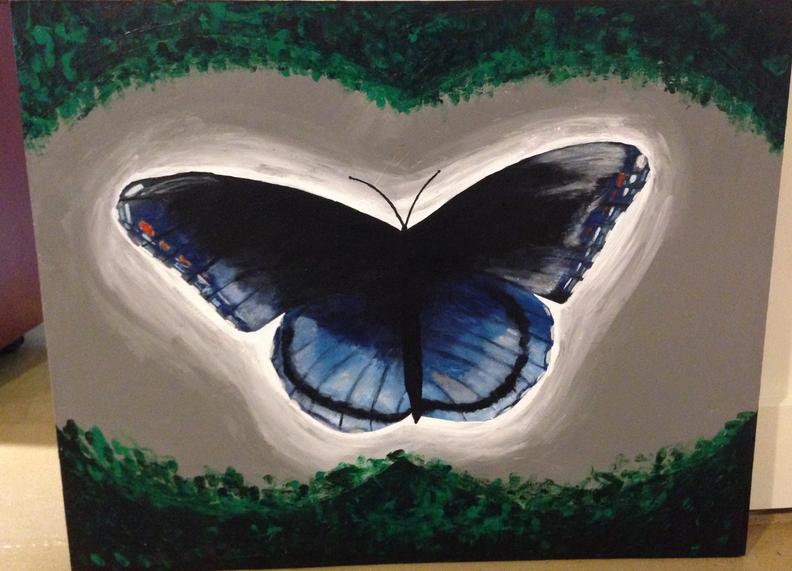
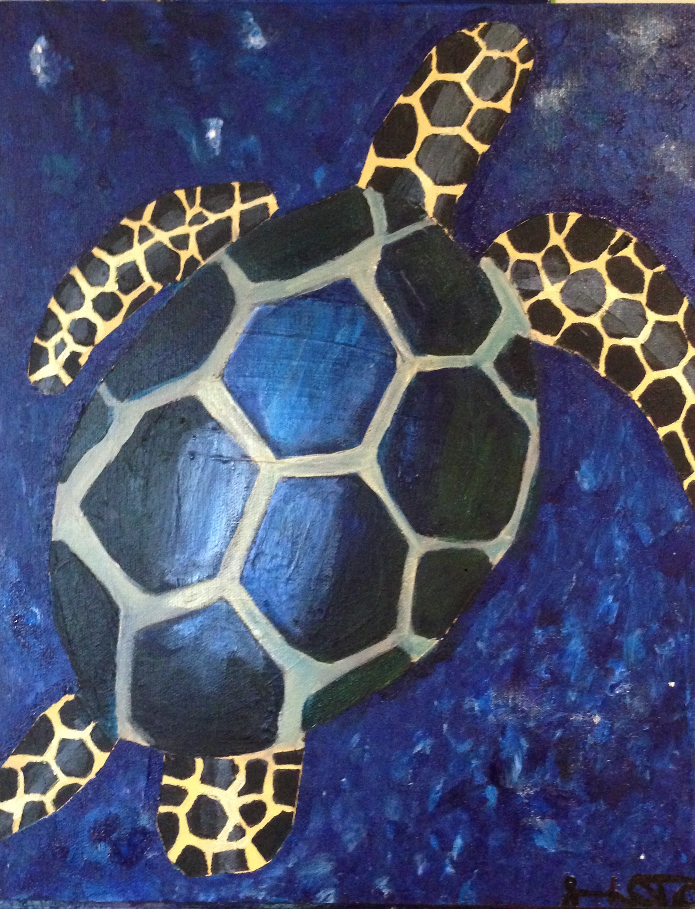
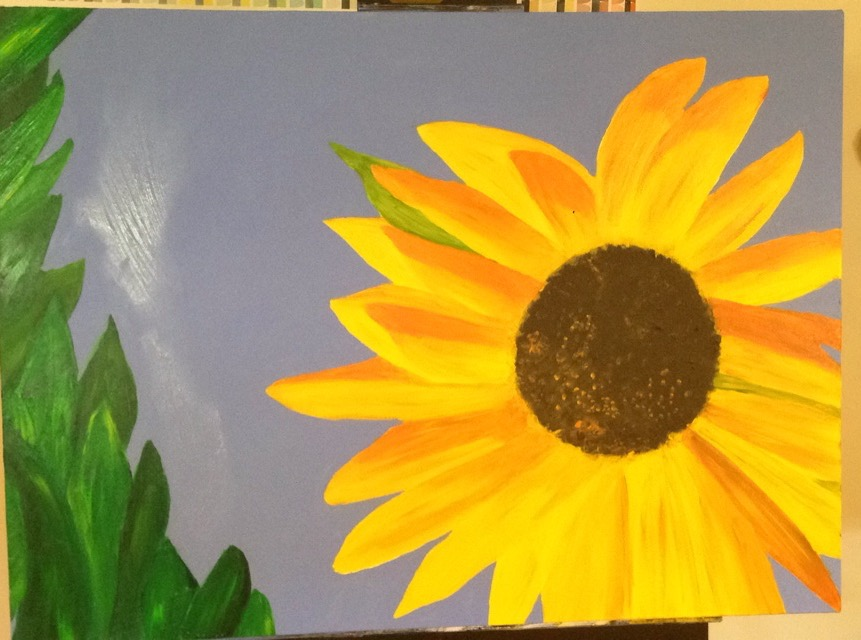
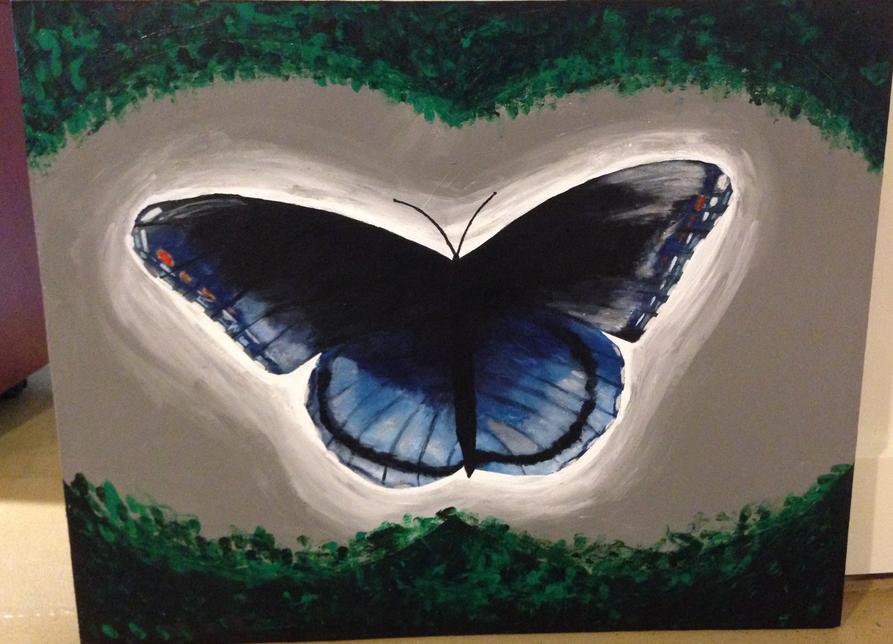
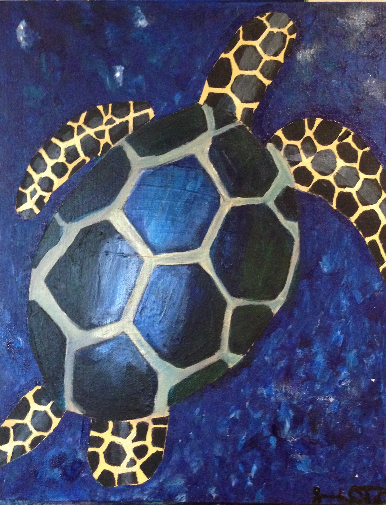
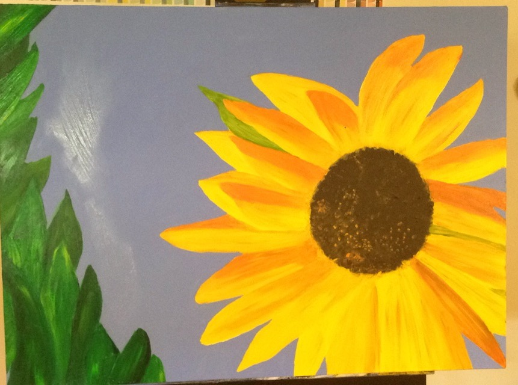

Take a look at my work in app design, logos, website design, ux,and painting. I build all my own icons and logos, I create everything I use in Sketch.
These prototypes were created using InVision, an online prototyping tool. The designs are fully prototyped, and are navigable here.
G-liciousG-licious is the menu app developed by Grinnell AppDev for the Grinnell College community. This is the second design of the app, which I completed during the Spring semester of 2015. The redesign of this app happened during the redesign of all of the apps developed by AppDev, as the design team wanted to move towards a universal design model and a cleaner design aesthetic. The interior of the app is very similar to the first design, but cleaner and updated to match AppDev's new look. The Splash page represents not only this new aesthetic, but also the new G-licious logo which I created for this new design.
KDIC 88.5 is the Grinnell College radio station, produced and run by Grinnell students. The KDIC app got a new design because the old app was not functioning with the KDIC website, so the design team decided to change the outside of the app while the developers changed the inside. This is not the current design of the KDIC app, as this design was completed in March 2015 and in fall 2015 the app was redesigned for a third time. I drew inspiration for this app from the new iTunes and Spotify designs that were relevant when I was designing the app.
The old G-licious logo had a G in which the hook of the G was created by a spoon. When I was designing this new logo, I wanted to keep with the silverware theme since G-licious is a menu app, but get rid of the clunky spoon sticking off the G. I played around with a lot of different silverware themed logos, using all variants of silverware before deciding on this logo.
TriSarahTropsWhen I created this logo, I looked at a few triceratops shapes already in use, and combined bits of each to craft the outer shape of the dinosaur. I first had just the outline colored, but decided I preferred the body filled in because it lent itself to a slightly less 2D shape, while still keeping with the way I wanted the end product to look.
KDICKDIC had a previous logo I was working off of when I created this app icon, with black headphones around the red Grinnell laurel leaves. I chose white for the headphones in this app logo, which is not the same as the interior of the KDIC app which keeps the black headphones, because I wanted the icon to stand out on an iPhone screen.

When I joined Grinnell AppDev as a designer, my first project was to redesign the AppDev website members page. The first design (hexagons) was finished in December 2014, and the second iteration (tree) was finished in January of 2015 and was the first design I helped implement on the site using HTML and CSS. Now I am the webmaster of the site, and have implemented our newest members page design, finished in May 2015, and now oversee all website operations. We discovered that this design did not provide space for the information we wanted to have for each member on the page, so the tree design came out of wanting a design that gave us that ability. However in the spring of 2015 we had a large influx of trainees, so the tree design was scrapped for the current design of the page, designed by another member of our team, to consolidate space on the site with our large number of members.


The following exercises were a part of the course CSC 232 Human-Computer Interaction at Grinnell College in the spring semester of the 2014-2015 school year.
Observing Users and TasksThis assignment focused on the methodology of contexual inquity. My classmates Caleb Sponheim and Alex Mitchell were my partners on this project, in which we performed task analysis on a specific task of our choosing. The purpose of the assignment was to practice our observation and experiement with task representation. Here is our report.
PrototypingWhen prototyping in our couse, Caleb, Alex and I workd together again to create a mock protoype for a real-world project Alex would be working on in the future for the Grinnell College Administration. The prototype was supposed to support three tasks, outlined in our report, on either a web or mobile application. Here is our full prototype and report.
Heuristic EvaluationFor this assignment, my team of students consisted of Caleb Sponheim, Alex Mitchell, Lea Sonnenschein, and Hannah Cohn. We chose to evalute InVision, the prototyping tool we were all familiar with both through our work in Grinnell AppDev and in the previous assignment, using Myers' and John's Usability Aspect Report Template. You can read our full report here.
I began painting my freshman year of high school, and have continued to paint on my own since. Here are some of my recent paintings, all done in acrylic on canvas. Most of these are about two or three feet wide in the largest direction, as I prefer to work on big canvases.
 




